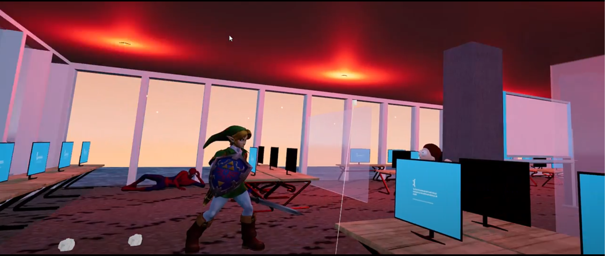

P1: CSE simulator
Description: BBB 1659, one of the largest computer rooms at UM north campus and part of the memory for CSE students, will be closed in 2023 for renewal. This project aims at reconstructing the old set up of BBB 1659 while introducing other interesting features using VR technology.
Technical Components: Unreal Engine 5: we use Unreal Engine 5 as our coding platform to place object and set up interaction logic. Oculus Quest Pro: we use Oculus Quest Pro provided at UM XR Visualization Studio as our VR hardware. Blend: we use Blend to adjust 3D model downloaded online (e.g. Sketchfab). JIRA: we use JIRA as our project management system to distribute task and track progress.